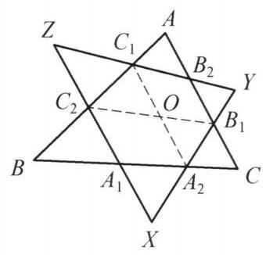

34 例 8：两三角形同向旋转相似中心
34.1 题目
设 \triangle {ABC} 和 \triangle {XYZ} 的交点 {A}_1,{A}_2,{B}_1,{B}_2,{C}_1,{C}_2 满足 \frac{{A}_1{A}_2}{BC} = \; \frac{{B}_1{B}_2}{AC} = \frac{{C}_1{C}_2}{AB} . 证明: \frac{{A}_2{B}_1}{XY} = \frac{{B}_2{C}_1}{YZ} = \frac{{C}_2{A}_1}{ZX} .
34.2 参考解答
如图 4-8,将 {B}_2{B}_1 平移至 {C}_{1}O ,则四边形 {C}_{1}O{B}_1{B}_2 为平行四边形. 令 \frac{{A}_1{A}_2}{BC} = \frac{{B}_1{B}_2}{AC} = \frac{{C}_1{C}_2}{AB} = \lambda ,在 \triangle {C}_2{C}_{1}O 及 \triangle {BAC} 中,由余弦定理并结合 \angle {C}_2{C}_{1}O = \; \angle {BAC} ,得
{C}_2{O}^2 = {C}_1{C}_2^2 + {C}_1{O}^2 - 2{C}_1{C}_2 \cdot {C}_{1}O \cdot \cos \angle {C}_2{C}_{1}O
= {C}_1{C}_2^2 + {B}_1{B}_2^2 - 2{C}_1{C}_2 \cdot {B}_1{B}_2 \cdot \cos \angle {C}_2{C}_{1}O
= {\lambda }^2\left( {A{B}^2 + A{C}^2 - {2AB} \cdot {AC} \cdot \cos \angle {BAC}}\right)
= {\lambda }^{2}B{C}^2 = {A}_1{A}_2^2,

图 4-8
即 {C}_{2}O = {A}_1{A}_2 .
又 \triangle {C}_2{C}_{1}O \backsim \triangle {ABC} ,故 \angle {C}_1{C}_{2}O = \angle {ABC} ,于是 {C}_{2}O//{BC} . 即 {C}_{2}O \perp {BC} , 从而四边形 {C}_{2}O{A}_2{A}_1 为平行四边形. 则 O{A}_2//{ZX} ,故 \angle O{A}_2{B}_1 = \angle {ZXY} . 由 O{B}_1//{ZY} ,知 \angle O{B}_1{A}_2 = \angle {ZYX} ,从而 \triangle O{A}_2{B}_1 \backsim \triangle {ZXY} ,所以
\frac{O{A}_2}{ZX} = \frac{O{B}_1}{ZY} = \frac{{A}_2{B}_1}{XY},
结合 O{A}_2 = {C}_2{A}_1, O{B}_1 = {C}_1{B}_2 ,得
\frac{{A}_2{B}_1}{XY} = \frac{{B}_2{C}_1}{YZ} = \frac{{C}_2{A}_1}{ZX}.
原问题得证.
注:通过平移，将 {A}_1{A}_2 ， {B}_1{B}_2 ， {C}_1{C}_2 联系在一起，同时得到一个由 {A}_2{B}_1 ， {B}_2{C}_1 ， {C}_2{A}_1 组成的三角形，再通过相似证明原问题.
34.3 解题思路与分析
这个证明确实非常精妙，初看时往往会感叹“怎么能想到平移出这样一个点 O”。要理解这个证明的“源动力”，我们可以从几何直观、向量思想以及逆向分析的角度来剖析它是如何被自然“想出来”的。
34.3.1 一、 核心动机：如何处理“散落各处”的线段？
在题目中，我们手头有三个比例关系： \frac{A_1A_2}{BC} = \frac{B_1B_2}{AC} = \frac{C_1C_2}{AB} = \lambda 但这三条线段 A_1A_2、B_1B_2、C_1C_2 分别躺在 \triangle ABC 的三条不同边上，彼此风马牛不相及。在几何中，如果要比较或运用几条分散的线段，最经典的想法就是通过平移把它们汇聚到同一个顶点或同一个三角形中，从而利用三角形的边角关系（如余弦定理）将它们统一处理。
这就是引入平移和辅助点 O 的第一层动机：集中兵力。
34.3.2 二、 拼图游戏的构思：构造“影子三角形”
作者的目标是想把 A_1A_2、B_1B_2、C_1C_2 这三条已知比例的线段组合成一个几何对象。
- 选择基准点：作者在 C_1 处下手。将 B_2B_1 平移到以 C_1 为起点的向量 C_1O（即 C_1O = B_2B_1）。
- 审视 \triangle C_2C_1O：
- 这时候，\triangle C_2C_1O 的一条边是 C_1C_2（对应原三角形的边 AB），另一条边是 C_1O（大小等于 B_1B_2，对应原三角形的边 AC）。
- 它们的夹角 \angle C_2C_1O 刚好等于 \angle BAC（因为平移了方向）。
- 惊艳的闭环（余弦定理）：
- 当你在纸上写下 \triangle C_2C_1O 的余弦定理时，你会发现它的第三边平方 C_2O^2 的展开式，竟然和 \triangle ABC 的余弦定理形式完全同构，仅差一个因子 \lambda^2： C_2O^2 = \lambda^2 (AB^2 + AC^2 - 2AB \cdot AC \cos A) = \lambda^2 BC^2 = A_1A_2^2
- 也就是说，第三边 C_2O 的长度，不多不少，正好等于第三条截线段 A_1A_2！
- 这一步是整个证明的点睛之笔：它通过巧妙的平移，把原本分散在三条边上的比例关系，完美地融合进了一个全新的三角形 \triangle C_2C_1O 中，并且这个新三角形的三边分别对应着 \lambda BC, \lambda CA, \lambda AB（或者说通过平移转化成了 A_1A_2 等）。
34.3.3 三、 顺藤摸瓜：连接 \triangle ABC 与 \triangle XYZ
既然通过平移造出了线段 C_2O = A_1A_2，下一步自然是要让它和 \triangle XYZ 产生联系。
- 平行关系的涌现：
- 因为 \triangle C_2C_1O 的边长比例与 \triangle ABC 对应成比例（且相似），推导出了 C_2O \parallel BC。
- 结合 C_2O = A_1A_2 且 C_2O \parallel A_1A_2（因为它们都平行于 BC），立刻可以断定四边形 C_2OA_2A_1 是平行四边形。
- 方向的传递（架起通往 XY, YZ, ZX 的桥梁）：
- 平行四边形带来了平行线：OA_2 \parallel ZX，OB_1 \parallel ZY。
- 这样一来，点 O 就像是一个“中转站”，它通过平移把 \triangle XYZ 的边向内收缩或平移到了点 O 周围，形成了 \triangle OA_2B_1。
- 证明 \triangle OA_2B_1 \sim \triangle ZXY 变成了一件水到渠成的事情（因为对应边分别平行，角度相等）。
34.3.4 四、 总结：这种辅助线是怎么想出来的？
如果你想在以后自己也能做出这样的辅助线，其背后的思维链条其实是：
- “分散化”向“集中化”的转化：看到多条散落在各边的平行或相似线段，立刻想到向量平移，把它们首尾相接拼成一个三角形或多边形。
- 代数结构的敏锐度：注意到题目给出的比例 \lambda 和余弦定理中各项的二次齐次性高度吻合。构造 \triangle C_2C_1O 时，故意让它包含 AB 和 AC 的组合，从而在代数上自然消去余弦项，化出 BC^2。
- 桥梁思维：中间变量 O 的引入，本质上是找一个“坐标原点”或“载体”，把 \triangle ABC 的内部交点几何（A_1, A_2, B_1, B_2, C_1, C_2）和外部三角形（\triangle XYZ）通过平行四边形平移黏合在一起。
34.4 分步证明
34.4.1 步骤 0：已知条件与图形结构
如图，△ABC 与 △XYZ 的边相互交织，截点分别为 A1, A2（在 BC 上）、 B1, B2（在 AC 上）、 C1, C2（在 AB 上）。 已知条件给出三组截线与边长成恒定比例：
A1A2⁄BC = B1B2⁄AC = C1C2⁄AB = λ
求证：△XYZ 边上的截线亦满足对应等比关系：
A2B1⁄XY = B2C1⁄YZ = C2A1⁄ZX
34.4.2 步骤 1：平移辅助线：构造平行四边形 C₁OB₁B₂
将线段 B2B1 平移至以 C1 为起点的向量 C1O，即令：
C1O // B2B1 且 C1O = B2B1
则四边形 C1OB1B2 为平行四边形。 由此导出关键等量关系：
C1O = B1B2 = λ · AC； OB1 // C1B2（即 OB1 // YZ）且 OB1 = B2C1。
34.4.3 步骤 2：余弦定理与相似：证明 ΔC₂C₁O ~ ΔBAC
在 △C2C1O 与 △BAC 中： 1. C1C2 = λ · AB； 2. C1O = B1B2 = λ · AC； 3. 由于 C1C2 在边 AB 上，且 C1O // AC，故方向夹角 ∠C2C1O = ∠BAC。 由余弦定理计算对边 C2O 的长度：
C2O2 = C1C22 + C1O2 - 2 C1C2 · C1O · cos∠C2C1O = λ2 (AB2 + AC2 - 2 AB · AC · cos∠BAC) = λ2 BC2 = A1A22
因此 C2O = A1A2 = λ · BC，且由 SAS 判定得：
△C2C1O ∼ △BAC
34.4.4 步骤 3：平行四边形传递：证明 C₂OA₂A₁ 为平行四边形
由 △C2C1O ∼ △BAC 可得对应角相等：
∠C1C2O = ∠ABC
因为点 C1, C2 均在直线 AB 上，由同位角相等知：
C2O // BC （即 C2O // A1A2）
又因已证 C2O = A1A2，一组对边平行且相等，故： 四边形 C2OA2A1 为平行四边形！ 由此立即获得另一组对边的平行与等长性质：
OA2 // C2A1 （即 OA2 // ZX） 且 OA2 = C2A1
34.4.5 步骤 4：核心相似三角形：证明 ΔOA₂B₁ ~ ΔZXY
考察图形中心的关键小三角形 △OA2B1 的三边位置关系：
OA2 // ZX（由平行四边形 C2OA2A1 对边）； OB1 // ZY（由平行四边形 C1OB1B2 对边）； 边 A2B1 本身恰好落在直线 XY 上。
由两组平行线与直线 XY 的夹角关系，对应角分别相等：
∠OA2B1 = ∠ZXY （对应 ∠X） ∠OB1A2 = ∠ZYX （对应 ∠Y）
由两角对应相等（AAA 判定），两三角形相似：
△OA2B1 ∼ △ZXY
34.4.6 步骤 5：边长比代换：得出最终结论
根据相似三角形 △OA2B1 ∼ △ZXY 的对应边成比例：
OA2⁄ZX = OB1⁄ZY = A2B1⁄XY
将前文证明的平行四边形等长对边代入：
OA2 = C2A1 OB1 = B2C1
直接代换得到目标比例恒等式：
A2B1⁄XY = B2C1⁄YZ = C2A1⁄ZX
原命题得证！ 注：通过向量平移将分散的截线统一成相似三角形，充分体现了平行四边形在几何比值传递中的转化枢纽作用。